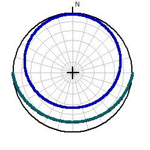
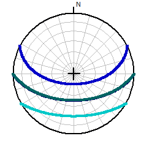
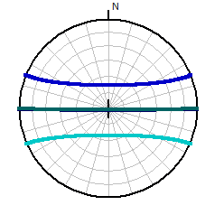

Sun Position Solstice and Equinoxes
On the Physical Geography entry on the popup menu after
right clicking on the map.
- Equinox/solstices: should show three plots (the two equinoxes look
identical in terms of the sun), but could only be two if within the
Arctic/Antarctic circles
- Today
- All: today and the equinox/solstices
- Overlay today or
selected day
This diagram shows a polar plot, with the azimuth to the sun along the spokes
of the diagram, and solar altitude from the small circles.
Noon will be when the sun reaches its highest altitude, the point closest to
the center of the diagram.
The curve farthest north will be the June Solistice, the farthest south will
be the December solstice, and the two equinoxes will be identical and between
the solstices on the diagram.
The sun can only get directly overhead at positions between the two tropics.
At the tropics it will be overhead only at a solstice; other locations between
the tropics will have it overhead on two days, which at the equator it will be
overhead at the
two equinoxes.
On the equinoxes, everywhere on earth the sun will rise due east and set due
west.
You can compare these with the variation in
daylight duration. Incoming solar radiation, which affects climate and
vegetation, depends on the duration of sunlight, the altititude of the sun, and
the presence of clouds.
|
 |
Point just inside the arctic circle.
- At the June Solstice, the sun never sets and complete a full 360 degree
transit.
- The two equinoxes (dark green) have the same pattern, with the sun
rising in the east and setting in the west (true at any latitude), which happens everywhere on
earth.
- The sun never rises for the December solstice.
|
|
 |
Annapolis at 39 degrees north.
- At the June solstice (blue), the sun rises in the northeast (60
degrees) and
sets in the northwest (300 degrees). It almost gets directly overhead at noon
(actually about 75 degrees),
at the Tropic of Cancer on this day the sun would directly overhead.
- The two equinoxes (dark green) have the same pattern, with the sun
rising in the east and setting in the west, which happens everywhere on
earth on this day.
- At the December solstice (cyan), the sun rises in the southeast
(120 degrees) and
sets in the southwest (240 degrees). It gets to a maximum of
30 degrees above the horizon at noon. Good time for
photography.
- The sun is always to the south at noon, which happens everywhere
north of the Tropic of Cancer.
|
|
 |
The equator
- At the June Solstice, the sun is always to the north, and never
quites get directly overhead.
- The two equinoxes (dark green) have the same pattern, with the sun
rising in the east and setting in the west, which happens everywhere on
earth. The sun is directly overhead at noon.
- At the Decrmber Solstice, the sun is always to the south, and
never quites get directly overhead.
- The equator has 12 hours of sunlight every day of the year.
|
If requested, today's positon will be shown in red, and will be between a solstice and an
equinox.
Last revision 1/5/2020